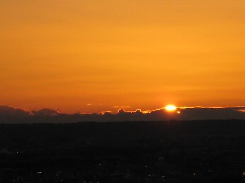
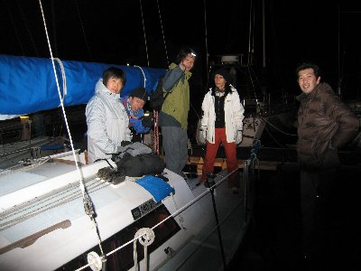
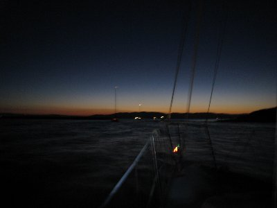
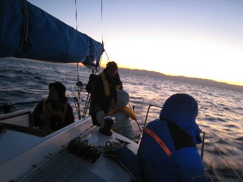
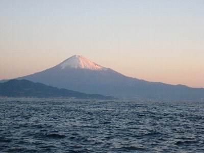
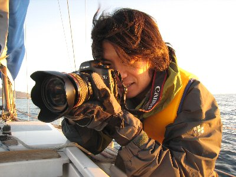

海上初日の出（＋最終日の入り） | 2009年1月 幹事：サムちゃん（最終日の入り：max） |
|---|---|
| 大みそか。例年通り（？）の「最終日の入り」が焼津市某所にて行われた。 高台から眺める、今年最後の夕日。一年が終わる。コーヒーを飲みながら今年一年を振り返りつつ談笑をしていた。さる丸さんから差し入れも頂き、プチコーヒー集会となった。 | |
 最終日の入り |  2008年最後の日の入りです |
| この時集まっていたメンバーに、ちょうど声が掛り、サムちゃんのヨットで初日の出クルーズに出ることになった。人数制限があるために、この時・この場所に居なかった方には申し訳ないが、今年最後のイベントで、来年初のイベント参加できる喜びは隠しきれない。しかも、初体験ヨットで初日の出。 翌朝、と言っても年越しイベント熱が冷めやらぬ闇の中（確か4時ごろだったと思うが）清水港に集合。 年越しでmax邸で飲んでいたため、解散から3時間も経っていない。 | |
|  年は変わって、早朝。出航準備中 （出航準備は主にサムちゃんなんだけど・・・） |  町の灯りを背に・・・・って誰？ |
| サムちゃんが準備してくれていたお陰で、早々に出発。 東の地平線が若干オレンジ掛った海は、滑らかな波間となり、周囲がよく見えない闇が、海の上という感覚を狂わし、自分の知らない世界に入った様だ。 目的地は三保沖。 薄っすらと明るくなりつつ世界で、南に進路をとる。 後方に富士山の輪郭が浮かび上がり、その美しさにオメデタイ気分になる。元旦から縁起が良い。 | |
|  うっすらと前に見える島が伊豆です |  夜明け前って、妙に気持ちが良いよね |
| 目的地到着後、周辺を回遊して時を待つ。 他のヨットも多数いて、緩やかに揺れる船上で、新年の風を浴びていた。 ふと海岸を見ると、あちらこちらに焚き火が焚かれていて、日の出を待つ人達が見えた。 紺色の世界からオレンジ色へ変わる頃、maxは、一眼レフカメラを構え忙しそうに撮影をして、サムちゃん達は船上の一服をつけていた。 | |
 ほら、後ろにうっすらと富士山が |  富士山にも朝日があたってきました |
| 伊豆の山なみから、今年最初の太陽が顔をのぞかせた。今年も良い事が有るようにと願いつつ、三保沖から撤収した。 今回の企画をして頂いたサムちゃんに多謝。 | |
 2009年の夜明けです |  懸命に写真を撮っておられる方発見！ |
| 一つのページに、最終日の入り と 初日の出 の写真をアップしているところは無いんじゃないかな？ 写真＆コメント ｂｙ べっしー | |